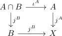
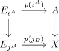
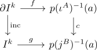
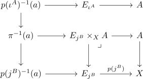
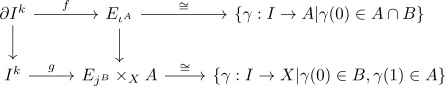

homotopy excision theorem
Proposition
Let $(X, \mathcal{T})$ be a topological space, $A,B$ an open cover such that $A \cap B \neq \emptyset$ is nonempty
Then the

such that
- $\iota^A$ is p-connected map
- $\iota^B$ is q-connected
for $p,q \geq 1$
Then for all $a \in A$ the map
is \(p+q-1\)-connected
see:
Proof
factor $\iota^A$ and $j^B$ into Homotopy equivalences and serre fibrations to get a square

observe that
Furthermore observe that
So there exists a standard homomorphism
Therefore it suffices to show that
is \(p+q-1\)- connected, as we get a diagram
We want to show that for $k < p + q$ that for every square

there exists $\overline{g}: I^k \rightarrow p(\iota^A)^{-1}(a)$ such that
and $c \overline{g} \simeq g$ relative to $\partial I^k$
see:
- proof of 5.3.1; TODO
Consider

It suffices to show that
is \(p+q+-1\)-connected
So consider

instead
It is enough to find a homtoopy of maps of pairs $(g,f) \simeq (\tilde{g}, \tilde{f})$ such that $\tilde{g}$ maps to $E_{\iota^A}$: We can achieve this by precomposing with an appropriate map $I^k \times [0,1] \rightarrow I^k \times [0,1]$ like
Note that this
corresponds by adjunction to a square
such that
- $\partial I^k \times \{0\}$ gets mapped to $A \cap B$
- $I^k \times \{0\}$ gets mapped to $B$
- $I^k \times \{1\}$ gets mapped to $A$
Call maps $g$ with these 3 properties and the commutative square above "good maps"
Our goal is to find a homotopy of $g$ through good maps to a map with image in $A$
main claim
there exists a homotopy of $g$ through good maps to a map $\tilde{g}$ such that
where
is the projection
Need to prove the claim using open covering of the disk induces closed decomposition we can choose a subdivision
such that
get mapped to $A$ or $B$
Proceed by induction on the skeletal filtartion of this subdivision, to show the following
There is a homotopy $h$ through good maps to a map $\tilde{g}$ such that
- if $g(C) \subseteq A$ or $g(C) \subseteq B$ for a cube $C \subseteq I^k$, then the homotopy $h(C \times [0,1]) \subseteq A$ or $h(C \times [0,1]) \subseteq B$
- if $g(C) \subseteq A \cap B$, then $h$ is constant
- if $g(C) \subseteq A$, then $\tilde{g}^{-1}(A \setminus (A \cap B)) \cap C \subseteq S_p^{\mathrm{dim} C}(C)$ (where $S_{p+1}^{\mathrm{dim} C}$ is the small cube)
- if $g(C) \subseteq B$, then $\tilde{g}^{-1}(B \setminus (A \cap B)) \cap C \subseteq B_{q+1}^{\mathrm{dim}(C)}(C)$
induction basis
follows from taking $-1$
induction step
assume that $g$ satisfies 3) and 4) for cubes of dimension $\leq l$ with $l \geq - 1$ Let $C$ be an \(l+1\)-cube in the subdivision of $I^k \tiems [0,1]$
If $g(C) \subseteq A \cap B$, choose the constant homotopy If $g(C) \subseteq A$
case 1)
$\mathrm{dim}(C) \leq p$, then the inclusion $\iota^A$ is \(p\)-connected, there exists a homotopy in $A$ from $g_{\vert C}$ relative to $\partial C$ to a map with values in $A \cap B$
case 2)
If $\mathrm{dim}(C) > p$, then by the homotopy big cube small cube lemma we get a homotopy on $C$
Preceed analogously fro $g(C) \subseteq B$.
Using the Homotopy Extension Property cube by cube defines a homotopy satisfying 1) and 2)
homotopy satisfies property
We want to show that
Let $x \in \mathrm{pr} \tilde{g}^{-1}(X \setminus A) \cap \mathrm{pr} \tilde{g}^{-1}(X \setminus B)$
Then there exists a $t_A,t_B \in [0,1]$ such that
By definition (x,t_A)$ ahs at least p+1 small coordinates in the cube $C$ containing $(x,t_A)$
Similarly by ii) $(x,t_B)$ has at least $+1$ small coordinates in the Cube $C'$ containing $(x,t_B)$
now $x$ has at least $p$ small coordinates in a cube $\subseteq I$ and at least $q$ big coordinates in the same cube But we are only looking at cubes of dimenison less than $p + q$
end of the proof
Pick a map $\sigma: I^k \rightarrow [0,1]$ such that
note that $\partial^k \rightarrow A$ hence we can separate it
Define
this is a homotopy through good maps:
- given $x \in \partial I^k$ we get $h(x,t,s) = \tilde{g}(x,-) \in A$
- $h(x,0,s) = \tilde{g}(x,s \simga(x)$. if $\tilde{g}(x,u) \in B$, then we are fien. Else if htere exists an $u \in [0,1]$ such that $\tilde{g}(x,u) \not\in B$, then u \in $\mathrm{pr} \tilde{g}^{-1}(X \setminus B)$ and hence $\sigma(x) = 0$, so $h(x,0,s) = \tilde{g}(x,0) \in B$
- $h(x,1,s) = \tilde{g}(x,1) \in A$
The endpoint of the homotopy $h(x,t,1) = \tilde{g}(x,t + (1-t) \sigma(x))$ If $\tilde{g}(x,u) \in A$ for all $u$, then all is good. Else if there exists $u$ with $\tilde{g}(x,u) \not\in A$, then $x \in \mathrm{pr}(\tilde{g}^{-1}(X \setminus A)$. Therefore $\sigma(x) = 1$ or $h(x,1,s) = \tilde{g}(x,1) \in A$
Remark
- https://mathoverflow.net/questions/436730/alternate-proofs-of-homotopy-excision-theorem
- needs serre spectral sequence ~> more work on derived categories # - needs relative hur